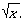

sqrt - square root function
#include <math.h> double sqrt(double x);
The sqrt() function computes the square root of x, An application wishing to check for error situations should set errno to 0 before calling sqrt(). If errno is non-zero on return, or the return value is NaN, an error has occurred.
Upon successful completion, sqrt() returns the square root of x.If x is NaN, NaN is returned and errno may be set to [EDOM].
If x is negative, 0.0 or NaN is returned and errno is set to [EDOM].
The sqrt() function will fail if:
- [EDOM]
- The value of x is negative.
The sqrt() function may fail if:
- [EDOM]
- The value of x is NaN.
No other errors will occur.
None.
None.
None.
isnan(), <math.h>, <stdio.h>.
Derived from Issue 1 of the SVID.